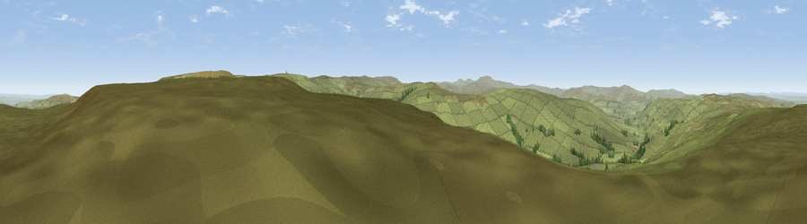

Viewpoint near Nenthead
#8673 in England · top 24% of its area beats it · near NentheadWhere it is
The exact computed spot (NY 77525 45875). Click the marker for map links.
The view, rendered

A 360° render of this exact spot computed from the terrain model, tree cover and land cover — summer colours, afternoon light, calibrated against photographs of famous viewpoints. Real trees, hedges and buildings will differ in detail.
The panorama
Grey silhouette: terrain skyline in each direction (720 bearings, Earth curvature and refraction included). Dashed green: skyline with trees (+15 m) and buildings (+8 m) as obstacles. Blue strip: how far the ground is visible on each bearing.
Where the view opens
Wedge length = distance to the farthest visible ground on that bearing (vegetation-aware). Rings at 10, 25 and 50 km.
What fills the view
97% grassland · 3% woodland
Angular shares of the visible panorama (visual magnitude), not map area. Landscape diversity 0.07 (0–1 Shannon).
Key numbers
More beautiful places nearby
The staircase of upgrades: each row has a higher view potential than everything closer. Driving times are estimates from straight-line distance, calibrated against real road routing — check an actual route before setting out.
| Place | Direction | Drive | Score |
|---|---|---|---|
| The Dodd | E · 1 km | ~4 min | 68.5 |
| Viewpoint near Nenthead | ENE · 2 km | ~5 min | 69.9 |
| Viewpoint near Nenthead | SSW · 3 km | ~8 min | 71.4 |
| Viewpoint near Allenheads | ESE · 5 km | ~10 min | 74.6 |
| Grey Nag | W · 11 km | ~21 min | 75.7 |
| Viewpoint near Renwick | W · 13 km | ~24 min | 77.0 |
| Cross Fell | SW · 15 km | ~26 min | 78.7 |
| Viewpoint near Cumrew | WNW · 22 km | ~37 min | 78.8 |
54.80723, -2.35118 · source: screening · position refined by local search. Computed location — check access rights before visiting.